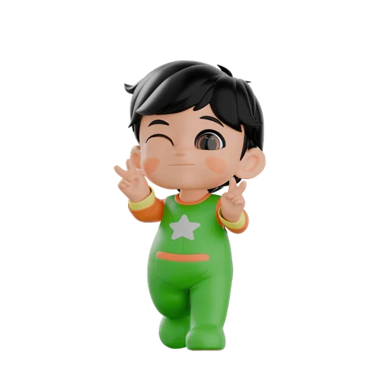
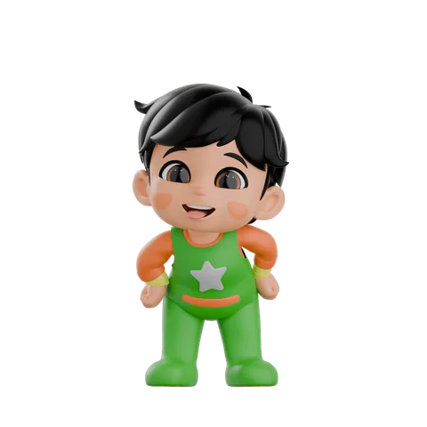

← Game Hub
⭐ 0 / 9

Baby Mo · Hewan
Sahabat Hewan Mo
Beri makan dan sayangi hewan bersama Mo!
Mulai Merawat
Buku Sahabat
Renungan
"Tidak ada seekor binatang pun di bumi dan tidak ada burung yang terbang dengan kedua sayapnya, melainkan umat-umat seperti kamu."
QS. Al-An'am: 38
✕
Hari 1
0
Tidur

Ketuk hewan untuk merawatnya.
Makan
Minum
Bersih
Elus
Ambil
← Kembali
⭐ 0 / 9
Buku Sahabat
Hewan
Adab
Mulai dari awal